Foundation 4: Seaborn — Statistical Visualisation
Data Science for Chartered Accountants — Pre-Module
What is this notebook about?
Seaborn is built on top of Matplotlib and makes beautiful statistical charts with less code. While Matplotlib gives you full control (every pixel), Seaborn gives you smarter defaults and statistical features out of the box.
This notebook assumes:
- ✅ 00a_numpy_basics.ipynb completed
- ✅ 00b_pandas_basics.ipynb completed
- ✅ 00c_matplotlib_basics.ipynb completed
- ❌ No prior Seaborn knowledge required
What will you learn?
- Seaborn vs Matplotlib — when to use which
- Themes and palettes
- Distribution plots:
histplot,kdeplot,boxplot,violinplot - Categorical plots:
barplot,countplot,stripplot - Relational plots:
scatterplot,lineplot - Heatmap — correlation matrices
- Pairplot — multi-variable relationships
- Combining Seaborn + Matplotlib for fine-tuning
- Bridge to accounting use-cases
Seaborn is to Matplotlib what a well-formatted MIS report is to raw trial balance data — same information, presented far more clearly.
import seaborn as sns
import matplotlib.pyplot as plt
import pandas as pd
import numpy as np
%matplotlib inline
# Set global theme
sns.set_theme(style='whitegrid', palette='muted', font_scale=1.1)
print('Seaborn version:', sns.__version__)
print('Ready!')
Seaborn version: 0.13.2
Ready!
Section 1: Seaborn vs Matplotlib — Choose the Right Tool
| Task | Use Matplotlib | Use Seaborn |
|---|---|---|
| Custom annotated chart | ✅ | |
| Financial dashboard layout | ✅ | |
| Distribution analysis | ✅ | |
| Correlation heatmap | ✅ | |
| Outlier detection (boxplot) | ✅ | |
| Group comparison (barplot with CI) | ✅ | |
| Pairwise scatter matrix | ✅ |
Good news: Seaborn returns Matplotlib Axes objects — so you can always add Matplotlib customisation on top of Seaborn charts.
Section 2: Themes and Colour Palettes
# ── Available styles ──────────────────────────────────────────────────────────
# 'darkgrid', 'whitegrid', 'dark', 'white', 'ticks'
# 'whitegrid' is cleanest for reports
styles = ['darkgrid', 'whitegrid', 'ticks', 'white']
x = np.arange(6)
y = [40, 55, 38, 72, 65, 80]
fig, axes = plt.subplots(1, 4, figsize=(16, 3))
for i, style in enumerate(styles):
with sns.axes_style(style):
axes[i].bar(x, y, color='steelblue')
axes[i].set_title(f'style: {style}', fontsize=10)
plt.tight_layout()
plt.show()
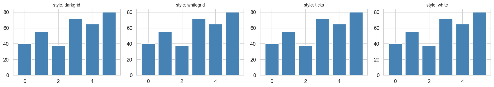
# ── Colour palettes ───────────────────────────────────────────────────────────
palettes = ['muted', 'deep', 'pastel', 'bright', 'colorblind', 'Set2']
fig, axes = plt.subplots(len(palettes), 1, figsize=(8, 6))
for ax, pal in zip(axes, palettes):
colours = sns.color_palette(pal, 6)
for j, c in enumerate(colours):
ax.barh(0, 1, left=j, color=c)
ax.set_yticks([0])
ax.set_yticklabels([pal])
ax.set_xticks([])
ax.set_xlim(0, 6)
plt.suptitle('Seaborn Colour Palettes', fontsize=12, fontweight='bold')
plt.tight_layout()
plt.show()
# Recommendation: 'muted' or 'colorblind' for professional reports
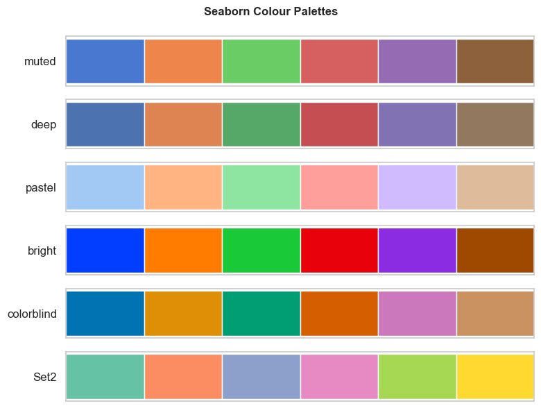
Section 3: Distribution Plots
# Create a salary dataset
np.random.seed(42)
salary_data = pd.DataFrame({
'department': np.repeat(['Accounts', 'Audit', 'Tax', 'Finance'], 25),
'salary' : np.concatenate([
np.random.normal(52000, 8000, 25),
np.random.normal(48000, 6000, 25),
np.random.normal(65000, 12000, 25),
np.random.normal(75000, 15000, 25),
]),
'grade' : np.random.choice(['A', 'B', 'C'], 100),
})
salary_data['salary'] = salary_data['salary'].clip(30000, 1_50_000).round(-3)
print('Dataset shape:', salary_data.shape)
salary_data.head()
Dataset shape: (100, 3)
| department | salary | grade | |
|---|---|---|---|
| 0 | Accounts | 56000.0 | A |
| 1 | Accounts | 51000.0 | B |
| 2 | Accounts | 57000.0 | A |
| 3 | Accounts | 64000.0 | A |
| 4 | Accounts | 50000.0 | C |
# ── sns.histplot — histogram with optional KDE overlay ────────────────────────
fig, axes = plt.subplots(1, 2, figsize=(13, 5))
# Basic histogram
sns.histplot(salary_data['salary'], bins=20, ax=axes[0], color='steelblue')
axes[0].set_title('Salary Distribution (All Departments)', fontweight='bold')
axes[0].set_xlabel('Salary (₹)')
# With KDE + by department
sns.histplot(
data=salary_data, x='salary', hue='department',
kde=True, bins=15, alpha=0.4, ax=axes[1]
)
axes[1].set_title('Salary Distribution by Department', fontweight='bold')
axes[1].set_xlabel('Salary (₹)')
plt.tight_layout()
plt.show()
/var/folders/kp/mytrwq8157q9s1tmw7r79fkm0000gn/T/ipykernel_17021/4054635048.py:17: UserWarning: Glyph 8377 (\N{INDIAN RUPEE SIGN}) missing from font(s) Arial.
plt.tight_layout()
/Users/aayush/micromamba/envs/stats/lib/python3.10/site-packages/IPython/core/pylabtools.py:170: UserWarning: Glyph 8377 (\N{INDIAN RUPEE SIGN}) missing from font(s) Arial.
fig.canvas.print_figure(bytes_io, **kw)
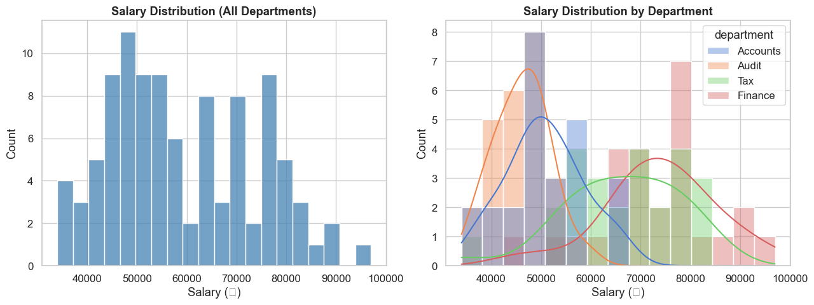
# ── sns.kdeplot — smooth density curve ───────────────────────────────────────
# Useful for comparing two distributions (e.g., last year vs this year)
np.random.seed(1)
prev_year = np.random.normal(50000, 8000, 80)
this_year = np.random.normal(58000, 9000, 80)
fig, ax = plt.subplots(figsize=(9, 5))
sns.kdeplot(prev_year, label='FY 2023-24', fill=True, alpha=0.3, color='steelblue')
sns.kdeplot(this_year, label='FY 2024-25', fill=True, alpha=0.3, color='coral')
ax.axvline(prev_year.mean(), color='steelblue', linestyle='--', linewidth=1.5)
ax.axvline(this_year.mean(), color='coral', linestyle='--', linewidth=1.5)
ax.set_title('Salary Distribution: Year-on-Year Comparison', fontweight='bold')
ax.set_xlabel('Salary (₹)')
ax.set_ylabel('Density')
ax.legend()
plt.tight_layout()
plt.show()
print(f'FY24 mean: ₹{prev_year.mean():,.0f} | FY25 mean: ₹{this_year.mean():,.0f}')
/var/folders/kp/mytrwq8157q9s1tmw7r79fkm0000gn/T/ipykernel_17021/4109426178.py:16: UserWarning: Glyph 8377 (\N{INDIAN RUPEE SIGN}) missing from font(s) Arial.
plt.tight_layout()
/Users/aayush/micromamba/envs/stats/lib/python3.10/site-packages/IPython/core/pylabtools.py:170: UserWarning: Glyph 8377 (\N{INDIAN RUPEE SIGN}) missing from font(s) Arial.
fig.canvas.print_figure(bytes_io, **kw)
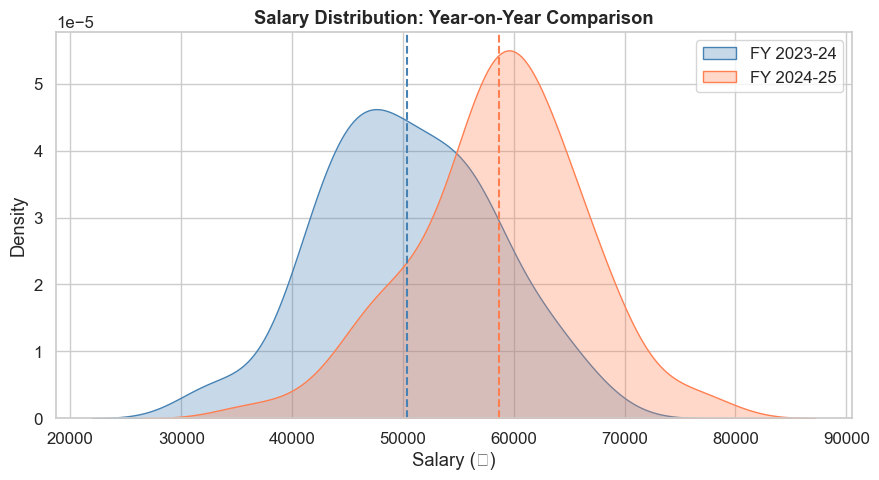
FY24 mean: ₹50,396 | FY25 mean: ₹58,652
# ── sns.boxplot — detect outliers, compare medians ───────────────────────────
# The box = interquartile range (Q1 to Q3)
# The line = median; the whiskers = 1.5 × IQR; dots = outliers
fig, axes = plt.subplots(1, 2, figsize=(13, 5))
# By department
sns.boxplot(data=salary_data, x='department', y='salary',
palette='muted', ax=axes[0])
axes[0].set_title('Salary Distribution by Department', fontweight='bold')
axes[0].set_xlabel('Department')
axes[0].set_ylabel('Salary (₹)')
axes[0].tick_params(axis='x', rotation=15)
# By grade, hue by department
sns.boxplot(data=salary_data, x='grade', y='salary',
hue='department', palette='Set2', ax=axes[1])
axes[1].set_title('Salary by Grade and Department', fontweight='bold')
axes[1].set_xlabel('Grade')
axes[1].set_ylabel('Salary (₹)')
axes[1].legend(title='Dept', fontsize=8, title_fontsize=9)
plt.tight_layout()
plt.show()
/var/folders/kp/mytrwq8157q9s1tmw7r79fkm0000gn/T/ipykernel_17021/3901900851.py:8: FutureWarning:
Passing `palette` without assigning `hue` is deprecated and will be removed in v0.14.0. Assign the `x` variable to `hue` and set `legend=False` for the same effect.
sns.boxplot(data=salary_data, x='department', y='salary',
/var/folders/kp/mytrwq8157q9s1tmw7r79fkm0000gn/T/ipykernel_17021/3901900851.py:23: UserWarning: Glyph 8377 (\N{INDIAN RUPEE SIGN}) missing from font(s) Arial.
plt.tight_layout()
/Users/aayush/micromamba/envs/stats/lib/python3.10/site-packages/IPython/core/pylabtools.py:170: UserWarning: Glyph 8377 (\N{INDIAN RUPEE SIGN}) missing from font(s) Arial.
fig.canvas.print_figure(bytes_io, **kw)
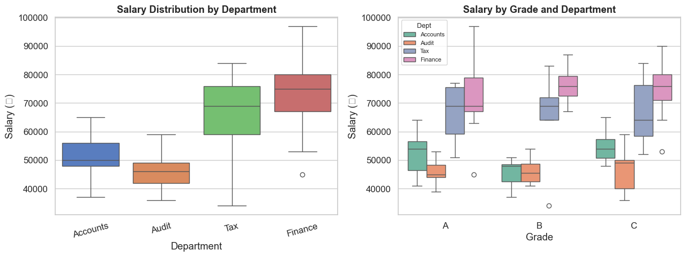
# ── sns.violinplot — combines box + KDE in one ────────────────────────────────
fig, ax = plt.subplots(figsize=(10, 5))
sns.violinplot(
data=salary_data, x='department', y='salary',
palette='pastel', inner='quartile', # inner='box' or 'quartile' or 'point'
ax=ax
)
ax.set_title('Salary Distribution (Violin Plot — shape shows density)', fontweight='bold')
ax.set_xlabel('Department')
ax.set_ylabel('Salary (₹)')
plt.tight_layout()
plt.show()
/var/folders/kp/mytrwq8157q9s1tmw7r79fkm0000gn/T/ipykernel_17021/326856158.py:4: FutureWarning:
Passing `palette` without assigning `hue` is deprecated and will be removed in v0.14.0. Assign the `x` variable to `hue` and set `legend=False` for the same effect.
sns.violinplot(
/var/folders/kp/mytrwq8157q9s1tmw7r79fkm0000gn/T/ipykernel_17021/326856158.py:13: UserWarning: Glyph 8377 (\N{INDIAN RUPEE SIGN}) missing from font(s) Arial.
plt.tight_layout()
/Users/aayush/micromamba/envs/stats/lib/python3.10/site-packages/IPython/core/pylabtools.py:170: UserWarning: Glyph 8377 (\N{INDIAN RUPEE SIGN}) missing from font(s) Arial.
fig.canvas.print_figure(bytes_io, **kw)
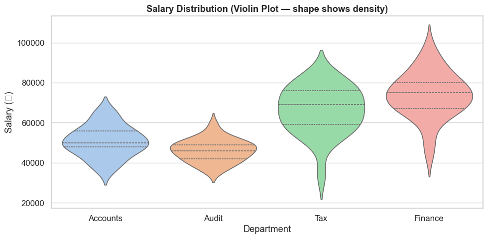
Section 4: Categorical Plots
# ── sns.barplot — shows mean ± confidence interval ────────────────────────────
fig, axes = plt.subplots(1, 2, figsize=(13, 5))
# Average salary by department with error bars (95% CI)
sns.barplot(data=salary_data, x='department', y='salary',
palette='Blues_d', estimator='mean', errorbar='ci',
ax=axes[0])
axes[0].set_title('Mean Salary by Department\n(error bars = 95% confidence interval)', fontweight='bold')
axes[0].set_xlabel('Department')
axes[0].set_ylabel('Avg Salary (₹)')
axes[0].tick_params(axis='x', rotation=15)
# ── sns.countplot — count of records per category ────────────────────────────
sns.countplot(data=salary_data, x='department', hue='grade',
palette='Set2', ax=axes[1])
axes[1].set_title('Headcount by Department and Grade', fontweight='bold')
axes[1].set_xlabel('Department')
axes[1].set_ylabel('Count')
axes[1].legend(title='Grade', fontsize=9)
axes[1].tick_params(axis='x', rotation=15)
plt.tight_layout()
plt.show()
/var/folders/kp/mytrwq8157q9s1tmw7r79fkm0000gn/T/ipykernel_17021/3790605044.py:5: FutureWarning:
Passing `palette` without assigning `hue` is deprecated and will be removed in v0.14.0. Assign the `x` variable to `hue` and set `legend=False` for the same effect.
sns.barplot(data=salary_data, x='department', y='salary',
/var/folders/kp/mytrwq8157q9s1tmw7r79fkm0000gn/T/ipykernel_17021/3790605044.py:22: UserWarning: Glyph 8377 (\N{INDIAN RUPEE SIGN}) missing from font(s) Arial.
plt.tight_layout()
/Users/aayush/micromamba/envs/stats/lib/python3.10/site-packages/IPython/core/pylabtools.py:170: UserWarning: Glyph 8377 (\N{INDIAN RUPEE SIGN}) missing from font(s) Arial.
fig.canvas.print_figure(bytes_io, **kw)
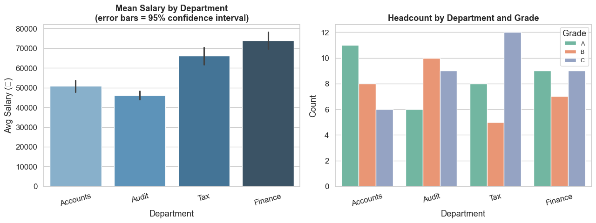
# ── sns.stripplot / swarmplot — show ALL data points ─────────────────────────
# Useful when n is small — you see every individual value
fig, ax = plt.subplots(figsize=(10, 5))
# Box under the strip (overlay technique)
sns.boxplot(data=salary_data, x='department', y='salary',
palette='pastel', ax=ax, width=0.5, fliersize=0)
sns.stripplot(data=salary_data, x='department', y='salary',
color='black', alpha=0.5, size=4, jitter=True, ax=ax)
ax.set_title('Salary — Box + Individual Data Points', fontweight='bold')
ax.set_xlabel('Department')
ax.set_ylabel('Salary (₹)')
plt.tight_layout()
plt.show()
/var/folders/kp/mytrwq8157q9s1tmw7r79fkm0000gn/T/ipykernel_17021/3746947156.py:7: FutureWarning:
Passing `palette` without assigning `hue` is deprecated and will be removed in v0.14.0. Assign the `x` variable to `hue` and set `legend=False` for the same effect.
sns.boxplot(data=salary_data, x='department', y='salary',
/var/folders/kp/mytrwq8157q9s1tmw7r79fkm0000gn/T/ipykernel_17021/3746947156.py:16: UserWarning: Glyph 8377 (\N{INDIAN RUPEE SIGN}) missing from font(s) Arial.
plt.tight_layout()
/Users/aayush/micromamba/envs/stats/lib/python3.10/site-packages/IPython/core/pylabtools.py:170: UserWarning: Glyph 8377 (\N{INDIAN RUPEE SIGN}) missing from font(s) Arial.
fig.canvas.print_figure(bytes_io, **kw)
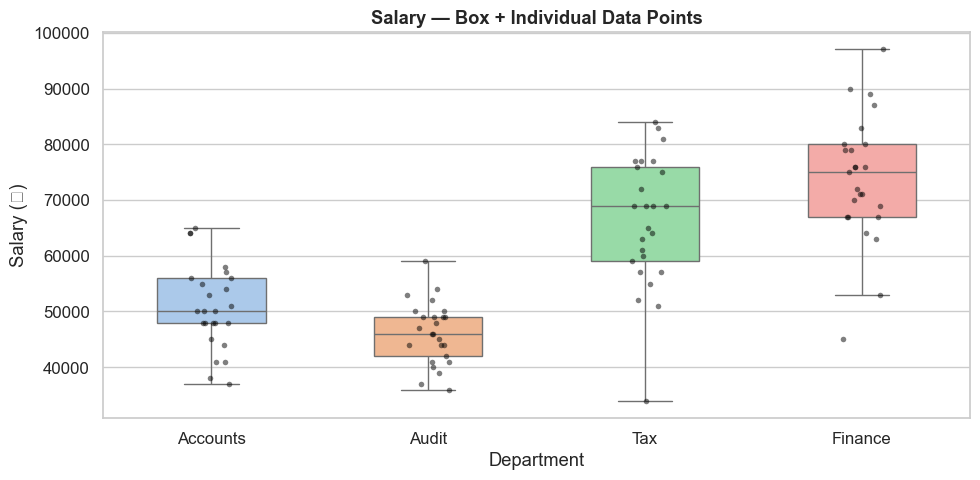
Section 5: Relational Plots — Trends and Relationships
# Create a multi-year revenue dataset
np.random.seed(3)
trend_data = pd.DataFrame({
'month' : list(range(1, 25)) * 2,
'revenue' : np.concatenate([
np.random.normal(100, 15, 24) + np.linspace(0, 30, 24),
np.random.normal(80, 12, 24) + np.linspace(0, 20, 24),
]),
'segment' : ['Domestic'] * 24 + ['Export'] * 24,
})
# ── sns.lineplot — line with confidence band ──────────────────────────────────
fig, ax = plt.subplots(figsize=(11, 5))
sns.lineplot(
data=trend_data, x='month', y='revenue',
hue='segment', style='segment',
markers=True, dashes=True,
palette=['steelblue', 'coral'],
ax=ax
)
ax.set_title('Monthly Revenue Trend by Segment\n(shaded band = 95% confidence interval)', fontweight='bold')
ax.set_xlabel('Month')
ax.set_ylabel('Revenue (₹ Lakhs)')
ax.legend(title='Segment')
plt.tight_layout()
plt.show()
/var/folders/kp/mytrwq8157q9s1tmw7r79fkm0000gn/T/ipykernel_17021/3244243274.py:27: UserWarning: Glyph 8377 (\N{INDIAN RUPEE SIGN}) missing from font(s) Arial.
plt.tight_layout()
/Users/aayush/micromamba/envs/stats/lib/python3.10/site-packages/IPython/core/pylabtools.py:170: UserWarning: Glyph 8377 (\N{INDIAN RUPEE SIGN}) missing from font(s) Arial.
fig.canvas.print_figure(bytes_io, **kw)
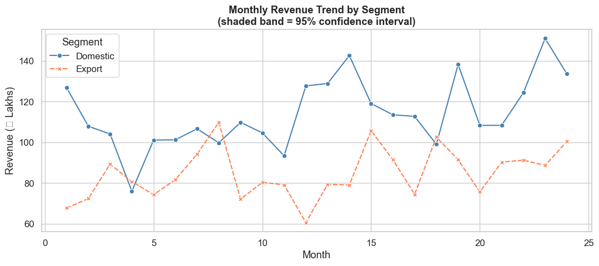
# ── sns.scatterplot — relationships between two numeric variables ─────────────
np.random.seed(7)
company_data = pd.DataFrame({
'revenue_cr' : np.random.uniform(10, 200, 50),
'emp_count' : np.random.randint(20, 500, 50),
'profit_margin': np.random.uniform(5, 30, 50),
'sector' : np.random.choice(['Manufacturing', 'Services', 'Retail', 'IT'], 50),
})
fig, ax = plt.subplots(figsize=(10, 6))
sns.scatterplot(
data=company_data,
x='revenue_cr',
y='profit_margin',
hue='sector', # different colour per sector
size='emp_count', # bubble size = employee count
sizes=(40, 400),
alpha=0.75,
palette='Set2',
ax=ax
)
ax.set_title('Revenue vs Profit Margin by Sector\n(bubble size = employee count)', fontweight='bold')
ax.set_xlabel('Revenue (₹ Crores)')
ax.set_ylabel('Profit Margin %')
ax.legend(title='Sector', bbox_to_anchor=(1.02, 1), loc='upper left', fontsize=9)
plt.tight_layout()
plt.show()
/var/folders/kp/mytrwq8157q9s1tmw7r79fkm0000gn/T/ipykernel_17021/2325755079.py:29: UserWarning: Glyph 8377 (\N{INDIAN RUPEE SIGN}) missing from font(s) Arial.
plt.tight_layout()
/Users/aayush/micromamba/envs/stats/lib/python3.10/site-packages/IPython/core/pylabtools.py:170: UserWarning: Glyph 8377 (\N{INDIAN RUPEE SIGN}) missing from font(s) Arial.
fig.canvas.print_figure(bytes_io, **kw)
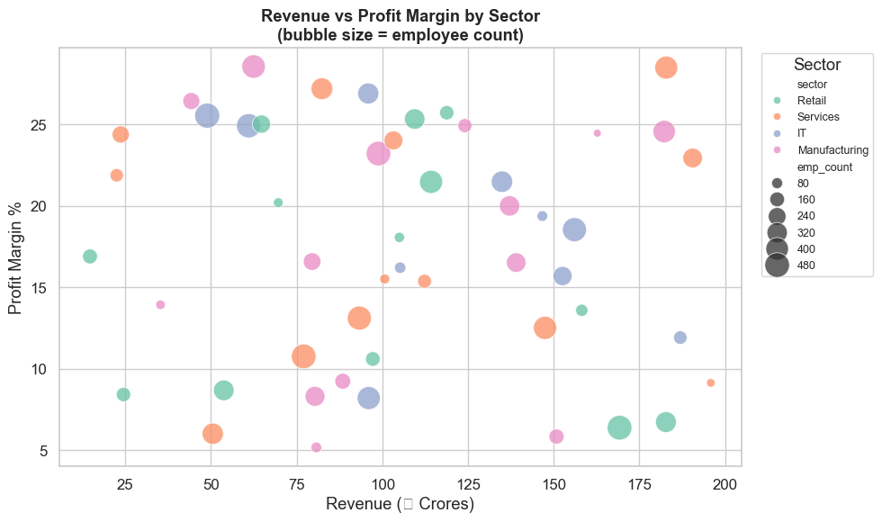
Section 6: Heatmap — Correlation Analysis
# Create a financial metrics dataset
np.random.seed(42)
n = 60
revenue = np.random.uniform(50, 500, n)
fin_metrics = pd.DataFrame({
'Revenue' : revenue,
'EBITDA' : revenue * np.random.uniform(0.10, 0.25, n) + np.random.randn(n) * 5,
'Net_Profit' : revenue * np.random.uniform(0.04, 0.12, n) + np.random.randn(n) * 3,
'Working_Cap' : revenue * np.random.uniform(0.15, 0.35, n) + np.random.randn(n) * 8,
'Debt' : revenue * np.random.uniform(0.20, 0.60, n) + np.random.randn(n) * 10,
'Tax_Outgo' : revenue * np.random.uniform(0.02, 0.06, n) + np.random.randn(n) * 2,
'Employees' : (revenue * np.random.uniform(0.5, 2.0, n)).astype(int),
})
# Compute correlation matrix
corr_matrix = fin_metrics.corr().round(2)
print('Correlation matrix:')
print(corr_matrix)
Correlation matrix:
Revenue EBITDA Net_Profit Working_Cap Debt Tax_Outgo \
Revenue 1.00 0.85 0.84 0.89 0.86 0.85
EBITDA 0.85 1.00 0.72 0.80 0.70 0.72
Net_Profit 0.84 0.72 1.00 0.74 0.78 0.65
Working_Cap 0.89 0.80 0.74 1.00 0.73 0.80
Debt 0.86 0.70 0.78 0.73 1.00 0.73
Tax_Outgo 0.85 0.72 0.65 0.80 0.73 1.00
Employees 0.84 0.69 0.72 0.74 0.65 0.64
Employees
Revenue 0.84
EBITDA 0.69
Net_Profit 0.72
Working_Cap 0.74
Debt 0.65
Tax_Outgo 0.64
Employees 1.00
# ── sns.heatmap ───────────────────────────────────────────────────────────────
fig, ax = plt.subplots(figsize=(9, 7))
mask = np.triu(np.ones_like(corr_matrix, dtype=bool)) # hide upper triangle (redundant)
sns.heatmap(
corr_matrix,
mask = mask,
annot = True, # show numbers in cells
fmt = '.2f', # 2 decimal places
cmap = 'RdYlGn', # Red=negative, Yellow=0, Green=positive
vmin = -1, vmax = 1,
linewidths = 0.5,
linecolor = 'white',
square = True,
ax = ax
)
ax.set_title('Financial Metrics — Correlation Matrix', fontsize=13, fontweight='bold', pad=15)
plt.tight_layout()
plt.show()
# ── Reading the heatmap ───────────────────────────────────────────────────────
print('\nTop correlated pairs (|corr| > 0.7):')
for col in corr_matrix.columns:
for row in corr_matrix.index:
if row != col and abs(corr_matrix.loc[row, col]) > 0.7:
print(f' {row} ↔ {col}: {corr_matrix.loc[row, col]:.2f}')
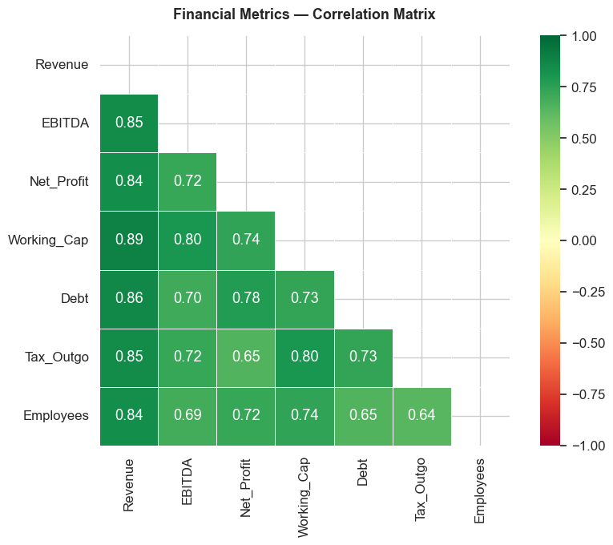
Top correlated pairs (|corr| > 0.7):
EBITDA ↔ Revenue: 0.85
Net_Profit ↔ Revenue: 0.84
Working_Cap ↔ Revenue: 0.89
Debt ↔ Revenue: 0.86
Tax_Outgo ↔ Revenue: 0.85
Employees ↔ Revenue: 0.84
Revenue ↔ EBITDA: 0.85
Net_Profit ↔ EBITDA: 0.72
Working_Cap ↔ EBITDA: 0.80
Tax_Outgo ↔ EBITDA: 0.72
Revenue ↔ Net_Profit: 0.84
EBITDA ↔ Net_Profit: 0.72
Working_Cap ↔ Net_Profit: 0.74
Debt ↔ Net_Profit: 0.78
Employees ↔ Net_Profit: 0.72
Revenue ↔ Working_Cap: 0.89
EBITDA ↔ Working_Cap: 0.80
Net_Profit ↔ Working_Cap: 0.74
Debt ↔ Working_Cap: 0.73
Tax_Outgo ↔ Working_Cap: 0.80
Employees ↔ Working_Cap: 0.74
Revenue ↔ Debt: 0.86
Net_Profit ↔ Debt: 0.78
Working_Cap ↔ Debt: 0.73
Tax_Outgo ↔ Debt: 0.73
Revenue ↔ Tax_Outgo: 0.85
EBITDA ↔ Tax_Outgo: 0.72
Working_Cap ↔ Tax_Outgo: 0.80
Debt ↔ Tax_Outgo: 0.73
Revenue ↔ Employees: 0.84
Net_Profit ↔ Employees: 0.72
Working_Cap ↔ Employees: 0.74
Section 7: Pairplot — Multi-variable Snapshot
# Select 4 variables for pairplot (too many = slow)
subset = fin_metrics[['Revenue', 'EBITDA', 'Net_Profit', 'Debt']].copy()
# Add a categorical column for colour
subset['Size'] = pd.cut(fin_metrics['Revenue'],
bins=[0, 100, 250, 500],
labels=['Small', 'Mid', 'Large'])
g = sns.pairplot(
subset,
hue = 'Size',
palette = 'Set2',
diag_kind = 'kde', # diagonal: KDE instead of histogram
plot_kws = dict(alpha=0.6, s=30)
)
g.figure.suptitle('Pairplot: Revenue, EBITDA, Net Profit, Debt by Company Size',
y=1.02, fontsize=12, fontweight='bold')
plt.tight_layout()
plt.show()
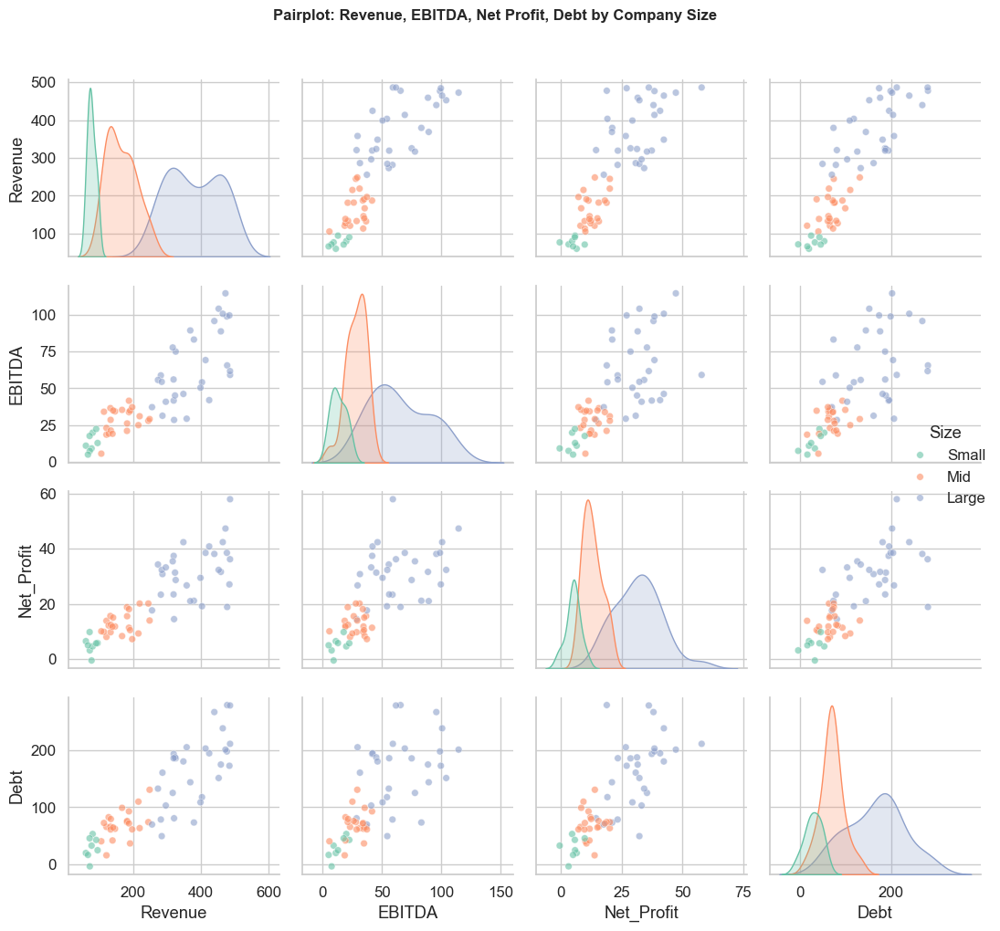
Section 8: Combining Seaborn + Matplotlib
# Seaborn creates the chart — Matplotlib adds fine-tuning on top
# Expense anomaly detection (high-salary outlier analysis)
np.random.seed(10)
expenses = pd.DataFrame({
'employee' : [f'Emp_{i:03d}' for i in range(50)],
'department': np.random.choice(['Sales', 'Finance', 'Admin'], 50),
'claims' : np.concatenate([
np.random.normal(8000, 2000, 47),
[45000, 52000, 38000] # 3 outliers
])
})
expenses['claims'] = expenses['claims'].clip(500, 60_000).round(0)
# Calculate outlier threshold (Q3 + 1.5 × IQR)
Q1, Q3 = expenses['claims'].quantile(0.25), expenses['claims'].quantile(0.75)
IQR = Q3 - Q1
upper_bound = Q3 + 1.5 * IQR
fig, ax = plt.subplots(figsize=(11, 5))
# Seaborn: box + strip
sns.boxplot(data=expenses, x='department', y='claims',
palette='pastel', width=0.5, fliersize=0, ax=ax)
sns.stripplot(data=expenses, x='department', y='claims',
color='steelblue', alpha=0.5, size=5, jitter=True, ax=ax)
# Matplotlib: add the outlier threshold line
ax.axhline(upper_bound, color='red', linestyle='--', linewidth=2,
label=f'Outlier threshold: ₹{upper_bound:,.0f}')
# Highlight the actual outlier points
outliers = expenses[expenses['claims'] > upper_bound]
dept_pos = {'Sales': 0, 'Finance': 1, 'Admin': 2}
for _, row in outliers.iterrows():
x_pos = dept_pos[row['department']]
ax.annotate(f"⚠ {row['employee']}\n₹{row['claims']:,.0f}",
xy=(x_pos, row['claims']),
xytext=(x_pos + 0.4, row['claims']),
fontsize=8, color='red',
arrowprops=dict(arrowstyle='->', color='red'))
ax.set_title('Employee Expense Claims — Outlier Detection', fontsize=13, fontweight='bold')
ax.set_xlabel('Department')
ax.set_ylabel('Claim Amount (₹)')
ax.legend()
plt.tight_layout()
plt.show()
print(f'\nOutlier threshold: ₹{upper_bound:,.0f}')
print('Flagged employees:')
print(outliers[['employee', 'department', 'claims']].to_string(index=False))
/var/folders/kp/mytrwq8157q9s1tmw7r79fkm0000gn/T/ipykernel_17021/1825653084.py:23: FutureWarning:
Passing `palette` without assigning `hue` is deprecated and will be removed in v0.14.0. Assign the `x` variable to `hue` and set `legend=False` for the same effect.
sns.boxplot(data=expenses, x='department', y='claims',
/var/folders/kp/mytrwq8157q9s1tmw7r79fkm0000gn/T/ipykernel_17021/1825653084.py:48: UserWarning: Glyph 8377 (\N{INDIAN RUPEE SIGN}) missing from font(s) Arial.
plt.tight_layout()
/var/folders/kp/mytrwq8157q9s1tmw7r79fkm0000gn/T/ipykernel_17021/1825653084.py:48: UserWarning: Glyph 9888 (\N{WARNING SIGN}) missing from font(s) Arial.
plt.tight_layout()
/Users/aayush/micromamba/envs/stats/lib/python3.10/site-packages/IPython/core/pylabtools.py:170: UserWarning: Glyph 8377 (\N{INDIAN RUPEE SIGN}) missing from font(s) Arial.
fig.canvas.print_figure(bytes_io, **kw)
/Users/aayush/micromamba/envs/stats/lib/python3.10/site-packages/IPython/core/pylabtools.py:170: UserWarning: Glyph 9888 (\N{WARNING SIGN}) missing from font(s) Arial.
fig.canvas.print_figure(bytes_io, **kw)
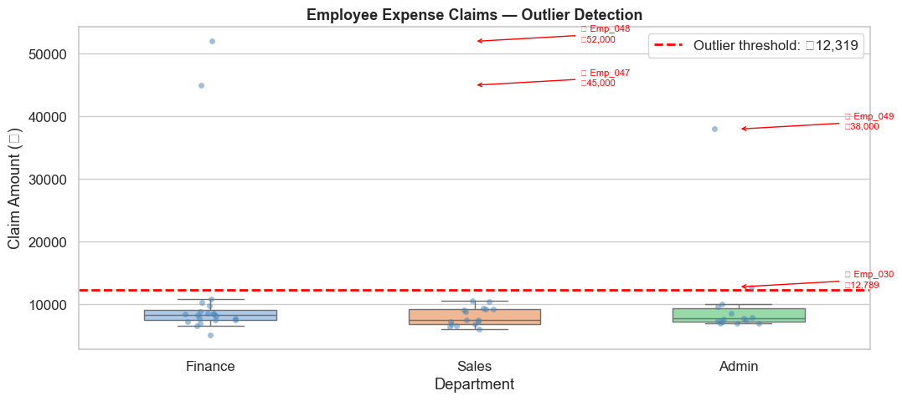
Outlier threshold: ₹12,319
Flagged employees:
employee department claims
Emp_030 Admin 12789.0
Emp_047 Finance 45000.0
Emp_048 Finance 52000.0
Emp_049 Admin 38000.0
Section 9: Accounting Bridge — Monthly Expense Heatmap
# Monthly expenses by department — useful for MIS reports
np.random.seed(5)
months = ['Apr', 'May', 'Jun', 'Jul', 'Aug', 'Sep',
'Oct', 'Nov', 'Dec', 'Jan', 'Feb', 'Mar']
depts = ['Sales', 'HR', 'IT', 'Finance', 'Operations']
expense_matrix = pd.DataFrame(
np.random.randint(10, 80, size=(12, 5)),
index = months,
columns = depts
)
# Add some variance for realism
expense_matrix.loc['Dec'] = expense_matrix.loc['Dec'] * 1.4 # year-end spike
expense_matrix.loc['Mar'] = expense_matrix.loc['Mar'] * 1.3 # year-end close
expense_matrix = expense_matrix.round(0).astype(int)
fig, ax = plt.subplots(figsize=(10, 7))
sns.heatmap(
expense_matrix,
annot = True,
fmt = 'd',
cmap = 'YlOrRd', # light=low, red=high spend
linewidths = 0.5,
linecolor = 'white',
cbar_kws = {'label': '₹ Lakhs'},
ax = ax
)
ax.set_title('FY 2024-25: Monthly Department Expense Heatmap (₹ Lakhs)',
fontsize=13, fontweight='bold', pad=15)
ax.set_xlabel('Department')
ax.set_ylabel('Month')
plt.tight_layout()
plt.show()
print('\nHighest spend: {dept} in {month} — ₹{val}L'.format(
dept = expense_matrix.stack().idxmax()[1],
month = expense_matrix.stack().idxmax()[0],
val = expense_matrix.stack().max()
))
/var/folders/kp/mytrwq8157q9s1tmw7r79fkm0000gn/T/ipykernel_17021/4022606796.py:14: FutureWarning: Setting an item of incompatible dtype is deprecated and will raise an error in a future version of pandas. Value '18.2' has dtype incompatible with int64, please explicitly cast to a compatible dtype first.
expense_matrix.loc['Dec'] = expense_matrix.loc['Dec'] * 1.4 # year-end spike
/var/folders/kp/mytrwq8157q9s1tmw7r79fkm0000gn/T/ipykernel_17021/4022606796.py:14: FutureWarning: Setting an item of incompatible dtype is deprecated and will raise an error in a future version of pandas. Value '51.8' has dtype incompatible with int64, please explicitly cast to a compatible dtype first.
expense_matrix.loc['Dec'] = expense_matrix.loc['Dec'] * 1.4 # year-end spike
/var/folders/kp/mytrwq8157q9s1tmw7r79fkm0000gn/T/ipykernel_17021/4022606796.py:14: FutureWarning: Setting an item of incompatible dtype is deprecated and will raise an error in a future version of pandas. Value '54.599999999999994' has dtype incompatible with int64, please explicitly cast to a compatible dtype first.
expense_matrix.loc['Dec'] = expense_matrix.loc['Dec'] * 1.4 # year-end spike
/var/folders/kp/mytrwq8157q9s1tmw7r79fkm0000gn/T/ipykernel_17021/4022606796.py:14: FutureWarning: Setting an item of incompatible dtype is deprecated and will raise an error in a future version of pandas. Value '60.199999999999996' has dtype incompatible with int64, please explicitly cast to a compatible dtype first.
expense_matrix.loc['Dec'] = expense_matrix.loc['Dec'] * 1.4 # year-end spike
/var/folders/kp/mytrwq8157q9s1tmw7r79fkm0000gn/T/ipykernel_17021/4022606796.py:14: FutureWarning: Setting an item of incompatible dtype is deprecated and will raise an error in a future version of pandas. Value '23.799999999999997' has dtype incompatible with int64, please explicitly cast to a compatible dtype first.
expense_matrix.loc['Dec'] = expense_matrix.loc['Dec'] * 1.4 # year-end spike
/Users/aayush/micromamba/envs/stats/lib/python3.10/site-packages/seaborn/utils.py:61: UserWarning: Glyph 8377 (\N{INDIAN RUPEE SIGN}) missing from font(s) Arial.
fig.canvas.draw()
/var/folders/kp/mytrwq8157q9s1tmw7r79fkm0000gn/T/ipykernel_17021/4022606796.py:36: UserWarning: Glyph 8377 (\N{INDIAN RUPEE SIGN}) missing from font(s) Arial.
plt.tight_layout()
/Users/aayush/micromamba/envs/stats/lib/python3.10/site-packages/IPython/core/pylabtools.py:170: UserWarning: Glyph 8377 (\N{INDIAN RUPEE SIGN}) missing from font(s) Arial.
fig.canvas.print_figure(bytes_io, **kw)
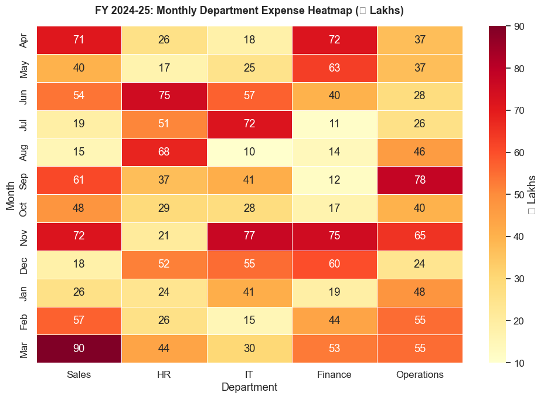
Highest spend: Sales in Mar — ₹90L
Section 10: Quick Reference Summary
import seaborn as sns
# Theme setup (do once at start of notebook)
sns.set_theme(style='whitegrid', palette='muted', font_scale=1.1)
# Distributions
sns.histplot(data=df, x='col', hue='group', bins=20, kde=True)
sns.kdeplot(data=df, x='col', hue='group', fill=True, alpha=0.3)
sns.boxplot(data=df, x='group', y='col', palette='muted')
sns.violinplot(data=df, x='group', y='col', inner='quartile')
# Categorical
sns.barplot(data=df, x='group', y='col', estimator='mean', errorbar='ci')
sns.countplot(data=df, x='group', hue='subgroup')
sns.stripplot(data=df, x='group', y='col', jitter=True, alpha=0.5)
# Relational
sns.scatterplot(data=df, x='col1', y='col2', hue='group', size='col3')
sns.lineplot(data=df, x='col1', y='col2', hue='group')
# Matrix / heatmap
sns.heatmap(corr_df, annot=True, fmt='.2f', cmap='RdYlGn', vmin=-1, vmax=1)
# Multi-variable
sns.pairplot(df, hue='category', diag_kind='kde')
# Seaborn + Matplotlib
fig, ax = plt.subplots(figsize=(10, 5))
sns.boxplot(..., ax=ax) # seaborn draws the chart
ax.axhline(threshold, ...) # matplotlib adds annotations
plt.title('...')
plt.tight_layout()
plt.show()
Seaborn vs Matplotlib recap:
| Use Seaborn for | Use Matplotlib for |
|---|---|
| Distribution analysis | Custom layout / positioning |
| Group comparisons | Precise annotations |
| Correlation heatmaps | Mixed chart types in one figure |
| Statistical confidence bands | Saving with exact dpi/size |
Practice Exercises
-
Create a boxplot comparing invoice amounts across 4 different vendors. Identify which vendor has the most outliers.
-
Plot a histogram showing the distribution of GST amounts in a 100-row invoice dataset. Overlay the KDE curve.
-
Build a heatmap showing the correlation between: Revenue, PAT, EBITDA, Total Assets, Debt for 30 companies.
-
Create a countplot showing the number of transactions per month, colour-coded by transaction type (Credit / Debit).
-
Create a scatter plot of Days Sales Outstanding (DSO) vs Revenue for 25 customers. Use
hueto show if the customer is in good standing or overdue.
# ── Exercise Solutions ─────────────────────────────────────────────────────────
# Exercise 1: Invoice boxplot by vendor
np.random.seed(42)
invoice_df = pd.DataFrame({
'vendor' : np.repeat(['Sunrise Trading', 'Metro Corp', 'Galaxy Ltd', 'Apex Supplies'], 30),
'amount' : np.concatenate([
np.random.normal(20000, 5000, 30),
np.random.normal(35000, 8000, 30),
np.concatenate([np.random.normal(15000, 3000, 27), [80000, 90000, 95000]]), # outliers
np.random.normal(50000, 15000, 30),
])
})
invoice_df['amount'] = invoice_df['amount'].clip(1000, 2_00_000).round(0)
fig, ax = plt.subplots(figsize=(10, 5))
sns.boxplot(data=invoice_df, x='vendor', y='amount', palette='Set2', ax=ax)
ax.set_title('Invoice Amount Distribution by Vendor\n(dots = outliers)', fontweight='bold')
ax.set_xlabel('Vendor')
ax.set_ylabel('Invoice Amount (₹)')
ax.tick_params(axis='x', rotation=10)
plt.tight_layout()
plt.show()
print('\nInvoices above 1.5×IQR per vendor:')
for vendor, group in invoice_df.groupby('vendor'):
Q1 = group['amount'].quantile(0.25)
Q3 = group['amount'].quantile(0.75)
ub = Q3 + 1.5 * (Q3 - Q1)
outlier_count = (group['amount'] > ub).sum()
print(f' {vendor}: {outlier_count} outliers (threshold ₹{ub:,.0f})')
/var/folders/kp/mytrwq8157q9s1tmw7r79fkm0000gn/T/ipykernel_17021/1983584827.py:17: FutureWarning:
Passing `palette` without assigning `hue` is deprecated and will be removed in v0.14.0. Assign the `x` variable to `hue` and set `legend=False` for the same effect.
sns.boxplot(data=invoice_df, x='vendor', y='amount', palette='Set2', ax=ax)
/var/folders/kp/mytrwq8157q9s1tmw7r79fkm0000gn/T/ipykernel_17021/1983584827.py:22: UserWarning: Glyph 8377 (\N{INDIAN RUPEE SIGN}) missing from font(s) Arial.
plt.tight_layout()
/Users/aayush/micromamba/envs/stats/lib/python3.10/site-packages/IPython/core/pylabtools.py:170: UserWarning: Glyph 8377 (\N{INDIAN RUPEE SIGN}) missing from font(s) Arial.
fig.canvas.print_figure(bytes_io, **kw)
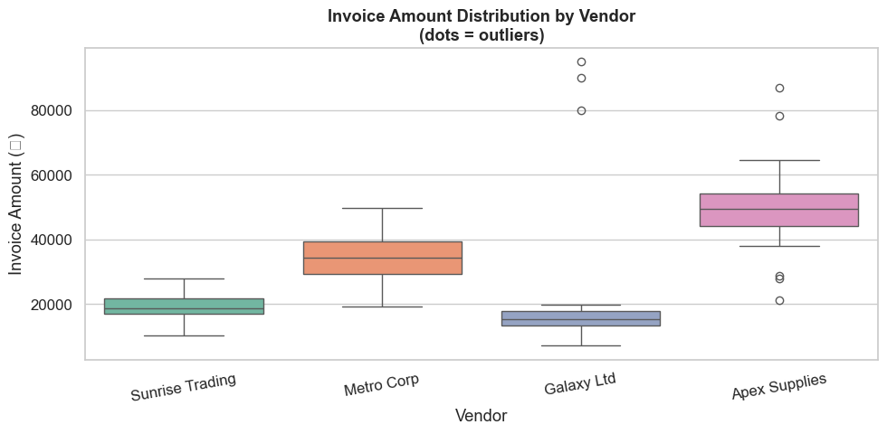
Invoices above 1.5×IQR per vendor:
Apex Supplies: 2 outliers (threshold ₹69,321)
Galaxy Ltd: 3 outliers (threshold ₹24,594)
Metro Corp: 0 outliers (threshold ₹54,402)
Sunrise Trading: 0 outliers (threshold ₹28,936)